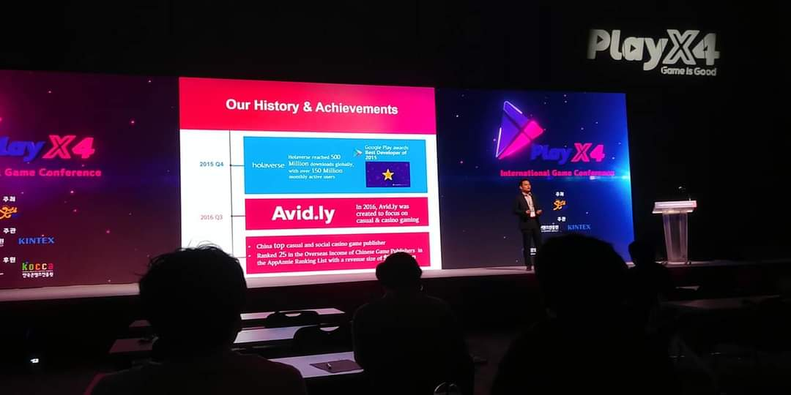
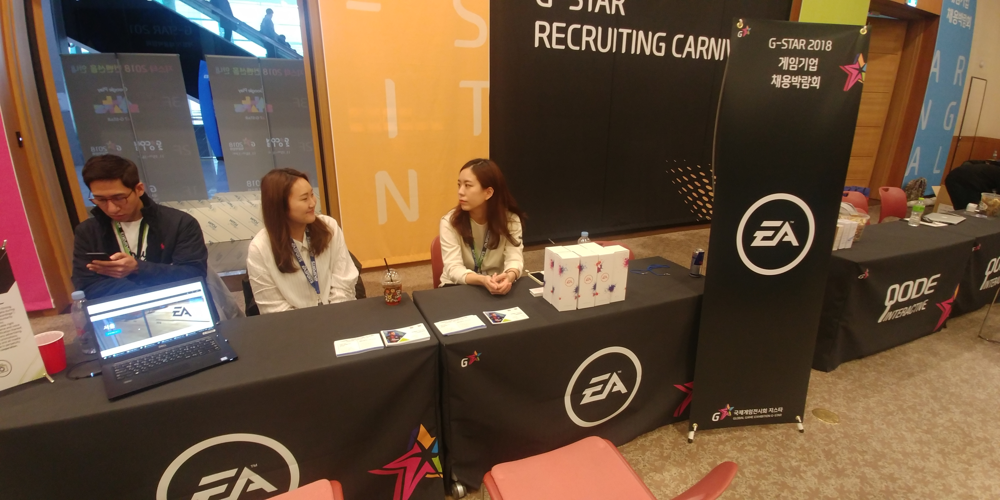
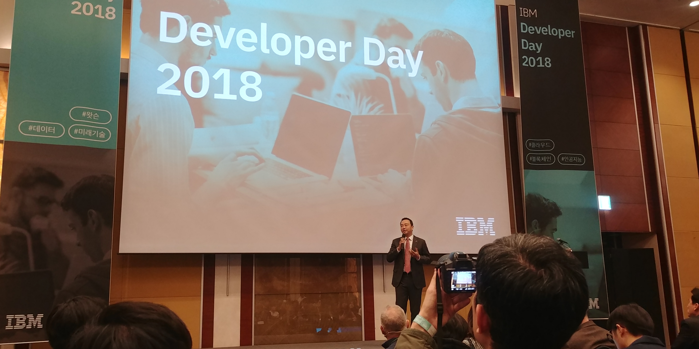

내 목표는 지금도 처음과 같다.
Valve에 입사하거나 나만의 게임 회사를 만드는것이다.
내가 존경하는 인물 중 하면은 바로 Valve의 창립자 "Gabe Newell"이다.
그에 대해 알아보던중 이 영상을 봤었다.
내가 힘들때나 동기부여가 필요할 때면 이 영상을 다시 꺼내보곤 한다.
나는 항상 게임에 진심이다.
게임을 플레이 하면서 이 게임은 어떤 컨텐츠를 가지고 어떻게 표현을 했는지, 어떤 구성을 했는지, 기획했는지를 따져본다.
또 될 수 있다면 "지스타" 나 "PlayX4" 같은 엑스포에 가서 기업들이 발표하는 어른들만 오는 컨퍼런스에 참석해서 당당하게 질문하거나 게임시장의 추세를 공부하나
소규모 기업이나 대학교 부스에 가서 어떤식으로 만들었는지 보고온다.
언젠가 나와 생각이 비슷한 사람들로 이루어진 게임 개발 크루를 꾸려 함께 개발하여 Steam에 출품하는게 작은 목표이다.
그동안 많은 아이디어들과 노하우들을 적어 놓은 노트가 있는데 언제가 이걸 이용하여 게임 기획자가 되고 싶다.


